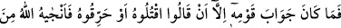
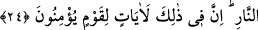

Molla Camî der ki:
Kevn/âlemin etrafını dolaş, çünkü bu murâd kâbesi
Kevn ü mekânın birkaç merhale ötesindedir
Şeyh Mağribî der ki:
Cesed darlığından çıkıp kurtulursan
Padişahın cennetinden başka bir şey sorma
Mesnevî’de der ki:
Cansızlıktan öldüm, bitki oldum; bitkilikten hayvanlığa ulaştım.
Hayvanlıktan ölüp insan oldum. Niye korkayım? Eksildim mi ölmekle?
İnsanlıktan öleyim melekler arasından başım, kanadım yükselsin.
Meleklik ırmağından da geçmeliyim. “Onun zâtı hâriç her şey fânîdir.”
Meleklikten kurban olup hayale gelmeyen neyse o olayım.
Sonra yokluk bana erganun gibi “Biz O’na döneriz.” der.
et-Te’vilâtü’n-Necmiyye’de kaydedildiğine göre, “Allah’ın âyetlerini ve O’na
kavuşmayı inkâr edenler” âyetinde, bazı hak tâliblerine ve sülûk ehline işâret vardır ki,
onlar bazı müşâhede makamlarını geçip hakkın eserlerine şâhid olup bazı sırlar da
kendilerine keşfolunduktan sonra Allah’ı talep dışında başka şeylere iltifat etmeleri
gayretullaha dokunmuş ve bu sebeple onları ibtilâya maruz kılmıştır. Böylece onlar
keşiften sonra hicâba uğramışlar, sırf Allah için olma hâlinden (tecerrüd) sonra
perdelenmişler (setr), yükseldikten sonra alçaltılmışlar, yakın olduktan sonra
uzaklaştırılmışlar, çağrıldıktan sonra reddolunmuşlardır. Dolayısıyla kemâlden sonra
noksanlığa düşmüşler (veya ihsandan sonra mahrum olmuşlar)dır ki, bu hâle düşmekten
Allah’a sığınırız.
24. Kavminin (İbrahim’e) cevabı ise: “Onu öldürün yahut yakın!” demelerinden
ibaret oldu. Ama Allah onu ateşten kurtardı. Doğrusu bunda, îman eden bir kavim
için ibretler vardır.
Sonunda İbrâhim (a.s.)’ın “Allah’a kulluk edin. O’na karşı gelmekten sakının”
sözüne “kavminin (İbrahim’e) cevabı ise” birbirlerine “Onu öldürün, yahut yakın!
demelerinden ibaret oldu.”